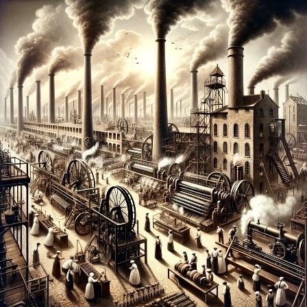
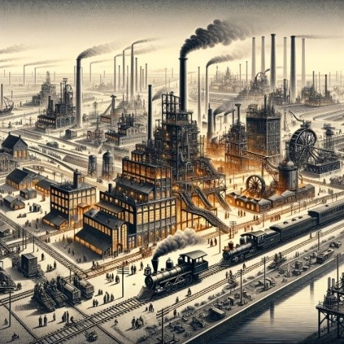
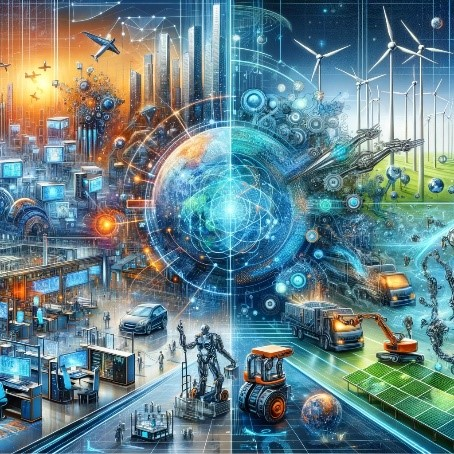
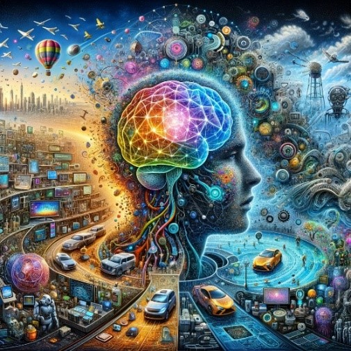
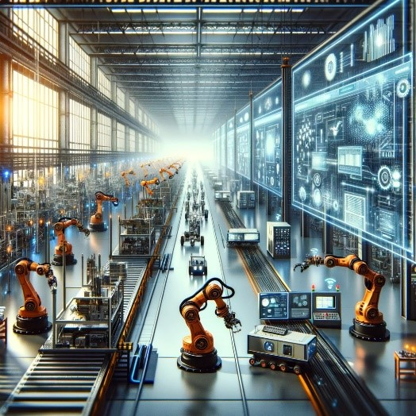

Industrial Revolution phases
First Industrial Revolution:
The First Industrial Revolution, spanning from the late 18th to early 19th century, marked a significant
transformation in human history. It began in Britain and was characterized by the

shift from handcraft to mechanized production, notably in textile manufacturing. This era saw the
introduction of steam power and the establishment of factory systems, drastically altering the economic
and social landscape.
Key distinctive aspects of the First Industrial Revolution include:
• Introduction of Steam Power: Steam engines revolutionized transportation and
manufacturing.
• Rise of Factories: Mass production in centralized locations replaced skilled artisan
workshops.
• Advancements in Textile Manufacturing: Innovations like the spinning jenny and power loom
boosted production efficiency.
• Economic and Social Impact: This period led to urbanization, changed labor patterns, and
had
significant impacts on social structures.
Second Industrial Revolution:
The Second Industrial Revolution, spanning from the late 19th to early 20th century, was a period of
rapid industrial growth and technological innovation, primarily in Europe and the

United States. It was characterized by the widespread adoption of electricity and steel production,
leading to massive changes in industries and society.
Four unique areas about the Second Industrial Revolution are:
• Widespread Use of Electricity: Electrification of factories and cities revolutionized
production and daily life.
• Advancements in Steel Production: New processes like the Bessemer method enabled mass
production of steel, fueling building and infrastructure development.
• Expansion of Railways and Telegraph: These innovations significantly improved communication
and
transportation.
• Emergence of Chemical and Petroleum Industries: These sectors saw substantial growth,
impacting
various aspects of manufacturing and energy.
Third Industrial Revolution:
The Third Industrial Revolution, also known as the Digital Revolution, marked a significant shift from
analog, mechanical, and industrial processes to digital technology. This era,

beginning in the late 20th century, was characterized by the advent of computers, the internet, and
information and communication technology.
Here are several distinctive areas:
• Emergence of Computers: Transition from analog to digital technologies, revolutionizing
data
processing and storage.
• Internet and Communication: Widespread adoption of the internet, facilitating global
connectivity and information exchange.
• Automation and Robotics: Advances in robotics and automation significantly impacted
manufacturing, leading to increased efficiency and production.
• Green Technologies: A shift towards renewable energy and more sustainable industrial
practices,
integrating environmental considerations into technological development.
Fourth Industrial Revolution:
The Fourth Industrial Revolution also known as Industry 4.0 represents a fundamental change in the way
we live, work, and relate to one another, driven by astonishing technological

advancements. It is characterized by a fusion of technologies blurring the lines between the physical,
digital, and biological spheres, largely influenced by the advent of artificial intelligence, the
Internet of Things, and cyber-physical systems.
Here are several distinctive areas:
• Artificial Intelligence: Proliferation of AI across various sectors, transforming data
analysis
and decision-making processes.
• Internet of Things (IoT): Extensive network of connected devices, enhancing data collection
and
automation in everyday objects.
• Cyber-Physical Systems: Integration of digital and physical systems, leading to smarter and
more efficient industrial processes.
• Advanced Robotics: Development of sophisticated robots, capable of complex tasks and
human-like
interactions.
• Biotechnology: Significant breakthroughs in genetic engineering, personalized medicine, and
bioengineering.
• 3D Printing: Revolutionizing manufacturing with the ability to create complex structures
and
products on-demand.
The end of the Industrial Revolution represents a monumental shift in human civilization. It
transitioned societies from agrarian economies to industrial powerhouses, forever changing the landscape
of work, culture, and technology. This era's end marks the dawn of digitalization, setting the stage for
unprecedented technological advancements.
In conclusion, the Industrial Revolution's legacy is a double-edged sword. It spurred immense growth and
innovation, laying the foundation for the modern world. However, it also brought environmental
challenges and social inequalities, prompting a reevaluation of industrial practices for a sustainable
and equitable future.
